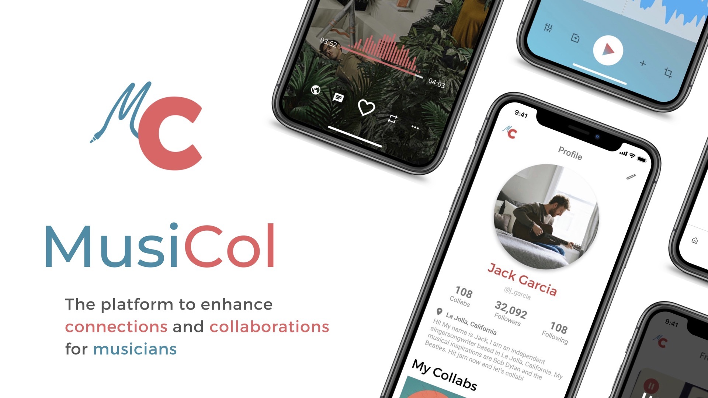
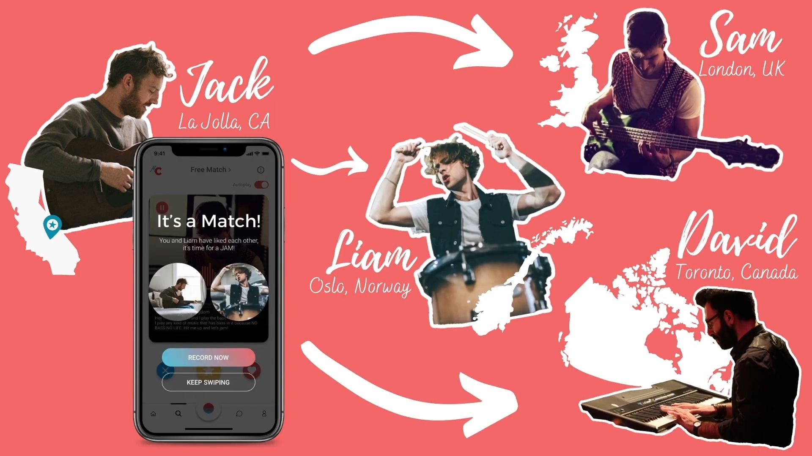
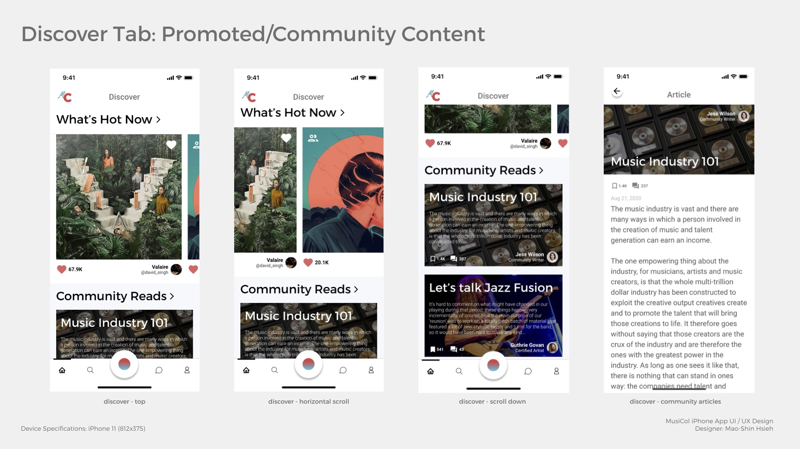
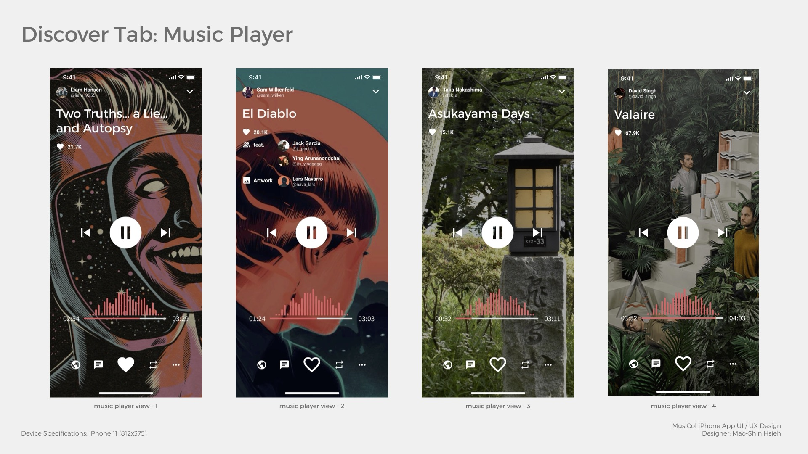
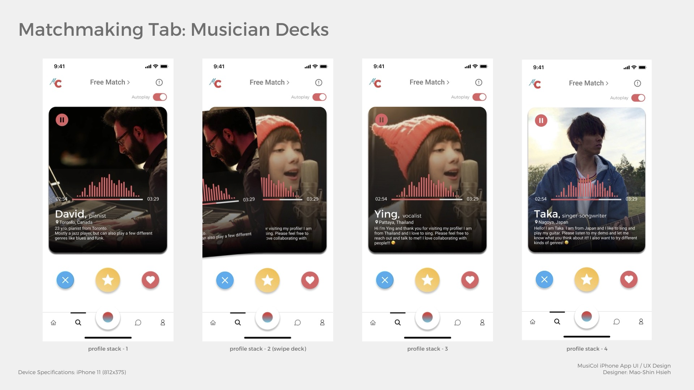
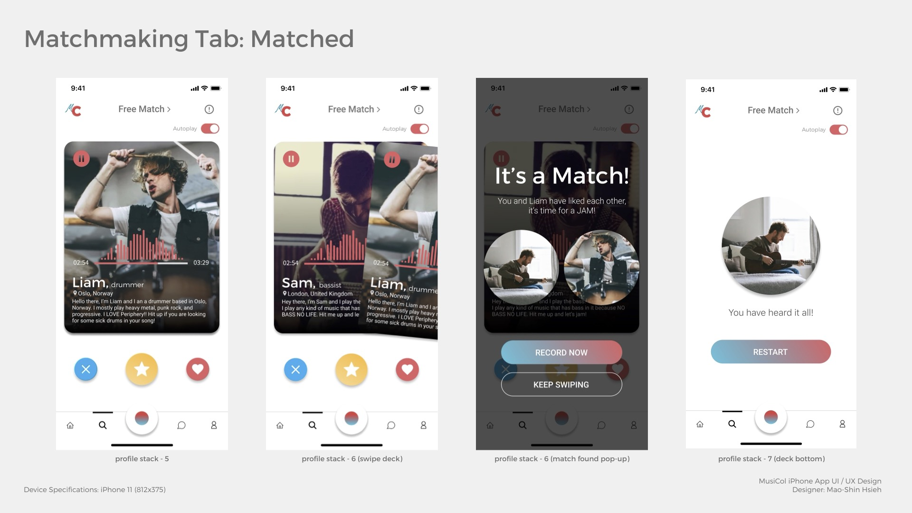
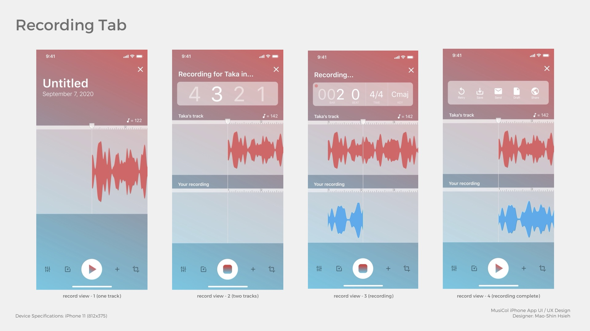
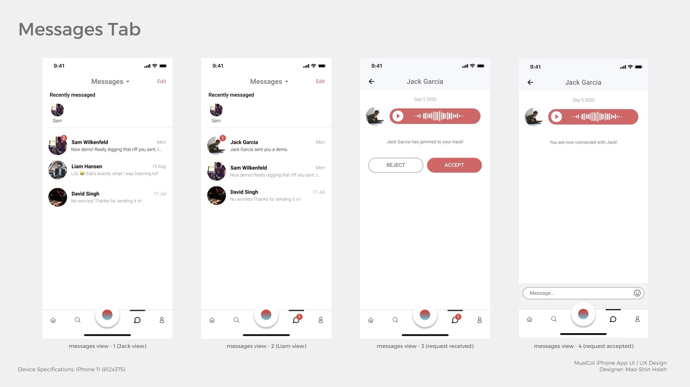
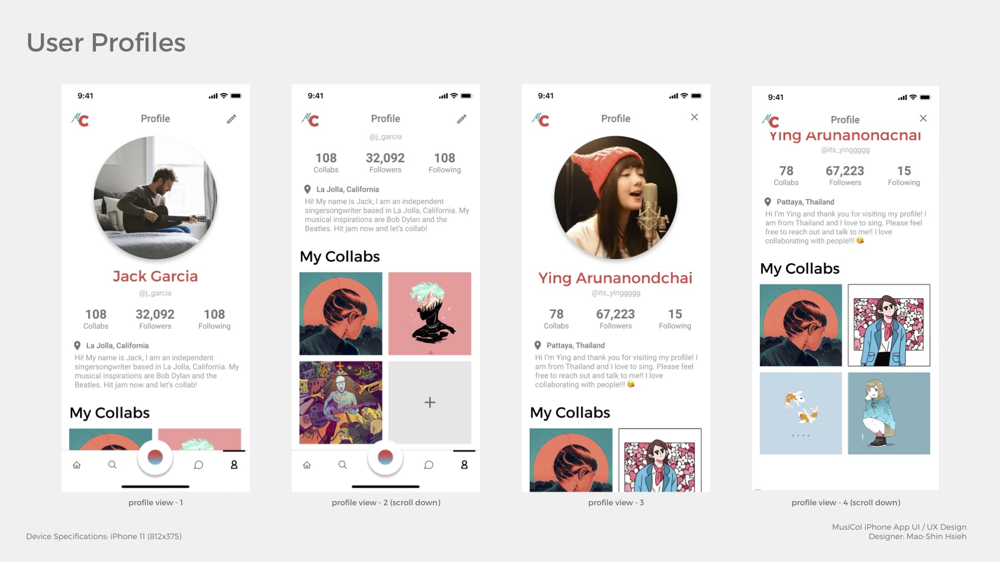

MusiCol

MusiCol is a startup project for a mobile app dedicated to connecting musicians and enhancing their experience in collaborating online.
Role: Co-founder, Lead UI/UX Designer
Platform: iOS (proposed)
Context
MusiCol was a group project for UCSD’s Computer Science and Engineering course “Successful Entrepreneurship,” where I co-managed a team of 5 by setting key project goals and milestones, organizing team meetings, and taking part in drafting a formal business proposal.
One of the key aspects of this project was thinking about the COVID-19 “new normal,” a pain point currently experienced by some people due to the pandemic, and offering a solution for it. As a musician, I was instantly reminded of the pandemic’s impact on the music and audio industry— connecting and collaborating were made harder due to social distancing and quarantine mandates, as studios and live venues throughout the world have ceased operations. Combining my interests in music and design, I proposed the idea of a social platform dedicated to musicians, allowing them to “jam out” with one another remotely in the confines of their own homes.
This course was my very first experience with entrepreneurship and how it works in the context of the real world. From conception stages to pitching the project to investors, this course has provided me with the essential toolkit and confidence to take on startup projects and to work in a tightly-knit team that oversees all aspects of a company.
Problem
During the COVID-19 pandemic, many music-related events from concerts to the NAMM show (National Association of Music Merchants’s annual exhibition) have either been canceled or moved online. These were typically the venues where musicians meet up to form their connections or gain regional exposure. As a result, musicians become isolated and struggle to find connections and opportunities for collaborations. Even before or after the pandemic, musicians lack a proper platform that is dedicated to their needs.
Solution
We solve this problem by offering a social media platform equipped with features tailored to musicians’ needs. This would include features such as musical profiles, a matchmaking system, asynchronous demo recording and auditions. Through our platform, musicians would be able to listen to others’ works or propose their works to decide whether they want to connect and collaborate. The process would be completed solely through our app as it will be shipped with all the necessary features to help musicians get the music flowing.
How MusiCol Works

MusiCol is a social media based smartphone app that focuses on talent discovery and seamless asynchronous musical collaborations. MusiCol harbors a community that gives users exposure to their content, allows users to preview each others’ musical works, as well as record their musical demos to use as proposals to start collaborations. MusiCol focuses on three aspects of a social media platform: discover, connect, and profile building. Our mobile app is arranged accordingly through a navigation bar at the bottom of the interface containing a discover tab, a matchmaking tab, a messaging tab, and a profile tab.
In the discover tab, users can see what is currently trending on the platform as well as all kinds of community content. This is where we plan to promote premium users’ content by giving them exposure on the top pages.


In the matchmaking tab, we have adopted the familiar experience users may find in a dating app, that is having profiles arranged into “card decks.” Swiping a card to the left dismisses a profile, and swiping to the right likes a profile. We use what we call an “asynchronous matchmaking system” that gives users two options when attempting to make a match: they can either unsolicitedly record a demo and send it to their target match as a proposal, or merely express likeness to others work and see if they like them back. In the latter case, this is when MusiCol prompts both users to start recording. Additionally, our recording interface makes demo making easier than ever. Equipped with state of the art musical algorithms and features such as tempo and key detection, mixer view, and multitrack, MusiCol’s all-in-one workflow allows users from both musical or nonmusical background to focus on music making instead of having to figure out the logistics behind recording.




Lastly, in the profile tab, users will be able to create their musician profiles where they can pin collaborations that they have been involved in on the platform before, or promote their original works. We have also implemented a follower system for musicians to accumulate their fan base, and allow tracking of particular musicians that users want to keep up to date with.

Experience the product prototype that I have designed and built in Figma:
Watch our product trailer from our pitch deck:
HARDWARE & SOFTWARE Design
pihead-fx~'s DSP is powered by Pure Data (Pd), which runs on a Raspberry Pi 3 Model B+ with GPIO control hardware mapped to Pd patches' internal parameters using a Python script.


Prototyping & 3D Modeling/Printing
The front panel of pihead-fx~ is designed in Autodesk Fusion and sliced for 3D printing using Cura.